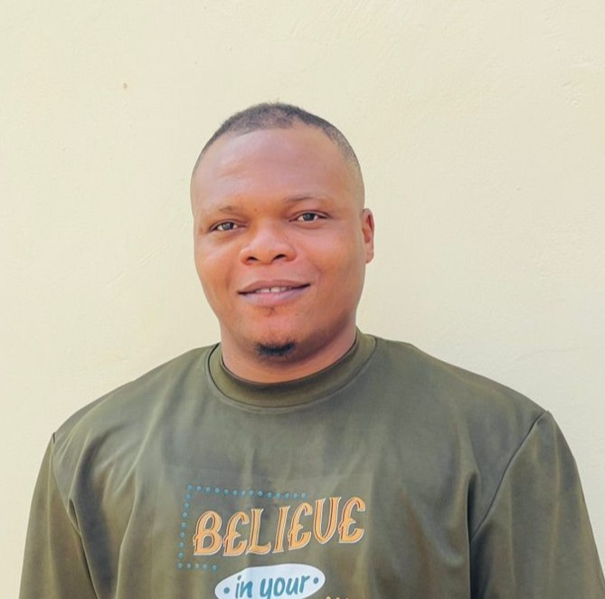

Chinedu Samuel Asiabaka | WDD 130

Results-driven IT Professional and Software Developer with a strong foundation in IT Help Desk operations and front-end development, complemented by a growing specialization in C# and ASP.NET. I bring a balanced blend of technical troubleshooting, software engineering, and user-focused problem-solving.